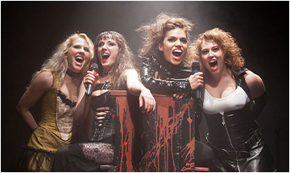

1982년 미국에서 일어난 미제 살인 사건,
‘리지 보든 사건’을 모티브로한
강렬하고 파격적인 여성 4인조 록 뮤지컬
잔혹하면서도 매혹적인 드라마, 강렬한 록 음악의 완벽한 결합
파워풀함과 섬세함을 넘나들며 노래로 극을 압도하는 배우들의 환상적인 보컬 앙상블
1890년대와 현대가 공존하는 독특하고 감각적인 비주얼 스타일,
흔한 공식을 따르지 않는 무대 연출, 6인조 라이브 밴드가 분출하는 록 연주 까지
짜릿한 전율의 무대를 선보이는 뮤지컬
<리지>
1990년 4곡의 실험적인 록 퍼포먼스로 시작
20년간 작품 개발 후 2009년 뉴욕에서 초연 이후 미국과 유럽 등지에서 열광적인 반응
2020년 서울에서 아시아 초연 '제5회 한국뮤지컬어워즈' 작품상 수상
2022년 3월 두산아트센터 연강홀에 그녀들이 다시 돌아왔다
